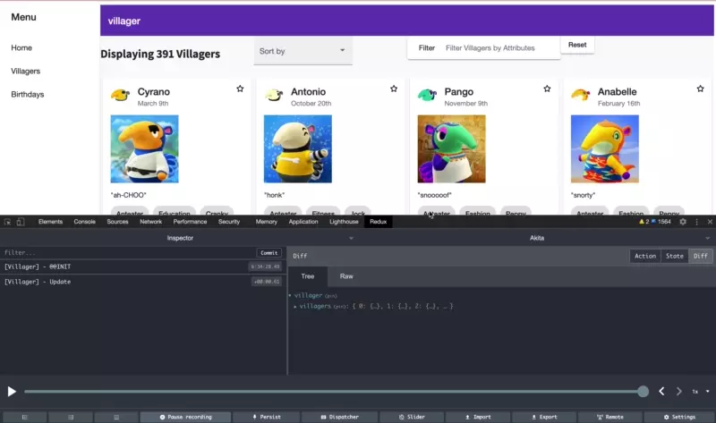

Reactive Programming, State Management, & Redux for the Modern Front End Developer
Jennifer Wadella

Jennifer Wadella
@likeOMGitsFEDAY
- Director of Angular Development at Bitovi
- Angular GDE
- International Speaker (pre-pandemic)
- Kombucha brewin' crazy plant lady

This talk may contain strong language, harsh truths, and serious passion.
Problems with Modern JavaScript Development
MVC Approach
Bidirectional data flow can affect application state in many places and be difficult to track.
Reactive Programming
Imperative vs. Declarative Programming
Imperative Approach
When events occur, code runs and changes the state of the program.
Imperative Code
Declarative Approach
Specifying HOW the state of a program should be altered.
Declarative Code
Reactive Programming
A declarative programming style concerned with data “streams” and propagation of change.
RxJS
(Reactive Extensions for JavaScript) is a library for reactive programming using observables that makes it easier to compose asynchronous or callback-based code.
What We Care About
Controlling when pieces of our application state change, and getting notified of those changes.
State Management
An organized approached to maintaining the state of your application data in a way that can be written to and read from.
State Management
Patterns/Libraries
- Redux
- NGRX
- Akita
Redux
A predictable state container for applications.
Created by Dan Abramov in 2015
Redux 101
Store: An object tree representing the state of your application.
Action: An object describing how to modify the state.
Reducer: A function that returns a new state based on the action provided.
Redux Demo Code
Redux Dev Tools
NGRX
https://ngrx.io/guide/store
NgRx is a framework for building reactive applications in Angular.
- Store - RxJS powered global state management for Angular apps, inspired by Redux.
- Effects - Side effect model for @ngrx/store.
- Router Store - Bindings to connect the Angular Router to @ngrx/store.
- Entity - Entity State adapter for managing record collections.
- ComponentStore - Standalone library for managing local/component state.
ngrx demo
NGRX Pros
- Great flow control
- Fairly clear what logic should go where
- Updating state with API data
- Selectors!
- Type safety!
NGRX Cons
- Large API
- Docs aren't great
- Intimidating learning curve
Akita
https://datorama.github.io/akita/
Akita is a state management pattern, built on top of RxJS, which takes the idea of multiple data stores from Flux and the immutable updates from Redux, along with the concept of streaming data, to create the Observable Data Store model.
Akita demo
Akita Pros
- Minimalistic API
- Fairly easy to understand
- Some built in logic
Akita Cons
- Subscription Management 😭
- Not super clear where to put logic
DIY State Management with RxJS
Simple State Management with BehaviorSubject
DYI Pros
- No lib to install
- No API to learn
- May be easier to understand the
"whys" of RxJS/State Management
DYI Cons
- You have to do literally everything
- Your RxJS knowledge better be on point
Summary
- State Management is good
- Choose an approach that works for you
- Don't be scared of RxJS
Questions?
Slides available at: statemanagement.jenniferwadella.com

Need help with  ? Work with me! jennifer@bitovi.com
? Work with me! jennifer@bitovi.com